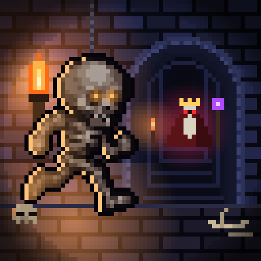

Privacy Policy
Bone Path · effective 13 October 2026
Bone Path (“the game”) is made by Artem Danilevych, an independent developer (“I”, “me”). This policy explains what data the game handles and why.
What the game itself stores
The game has no accounts and no sign-in. Your progress, settings and language choice are saved only on your device. I do not receive or store this information, and it is removed when you delete the game.
Advertising
The game is free and shows ads through Unity Ads, provided by Unity Technologies. To show and measure ads, Unity may collect:
- your device’s advertising identifier (IDFA), only if you allow tracking when iOS asks;
- your IP address, used to estimate a general location;
- information about the ads you see and interact with;
- technical data such as device model, OS version, crash and performance data.
Unity uses this data under its own policy: Unity Game Player and App User Privacy Policy.
Game Center, iCloud and statistics
- Game Center: if you are signed in to Game Center, your achievements are sent to Apple's Game Center under your Apple account. This is handled by Apple under Apple's privacy policy.
- iCloud: if iCloud is on, your save slots are copied to your own iCloud account so you can continue on another device. I cannot access your iCloud data.
- Anonymous statistics: the game may send anonymous gameplay events (for example, which chapter was finished or where a death happened) through TelemetryDeck. These events contain no name, email, advertising identifier or location, and are used only to improve the game's balance.
Your choices
- Tracking (iOS): the first time you play, iOS asks whether the game may track you. If you choose “Ask App Not to Track”, ads are not personalised with your advertising identifier. You can change this any time in Settings → Privacy & Security → Tracking.
- EEA, UK, Switzerland: in these regions the game does not ask for consent to personalised ads, so Unity shows non-personalised ads only.
- Rewarded ads are optional: you choose whether to watch an ad to revive or get a bonus.
Children
The game is not directed at children under 13, and I do not knowingly collect personal data from them.
Changes
If this policy changes, the new version will be published on this page with a new effective date.
Contact
Questions about privacy: amatsy008@gmail.com.
Політика конфіденційності
Bone Path · чинна з 13 жовтня 2026 року
Bone Path («гра») створив Артем Данилевич, незалежний розробник («я»). Ця політика пояснює, які дані обробляє гра і навіщо.
Що зберігає сама гра
У грі немає облікових записів і входу. Твій прогрес, налаштування та вибір мови зберігаються лише на твоєму пристрої. Я не отримую й не зберігаю цю інформацію, і вона видаляється разом із грою.
Реклама
Гра безкоштовна й показує рекламу через Unity Ads від Unity Technologies. Щоб показувати та вимірювати рекламу, Unity може збирати:
- рекламний ідентифікатор пристрою (IDFA) — лише якщо ти дозволиш відстеження, коли iOS про це запитає;
- IP-адресу, за якою визначається приблизне місцезнаходження;
- інформацію про рекламу, яку ти бачиш і з якою взаємодієш;
- технічні дані: модель пристрою, версію ОС, дані про збої та продуктивність.
Unity використовує ці дані згідно з власними правилами: Політика конфіденційності Unity для гравців і користувачів застосунків.
Game Center, iCloud і статистика
- Game Center: якщо ти увійшов у Game Center, досягнення надсилаються в Game Center від Apple під твоїм обліковим записом Apple. Цим займається Apple згідно з власною політикою конфіденційності.
- iCloud: якщо iCloud увімкнено, слоти збережень копіюються у твій власний iCloud, щоб продовжити гру на іншому пристрої. Я не маю доступу до твоїх даних в iCloud.
- Анонімна статистика: гра може надсилати анонімні ігрові події (наприклад, який розділ пройдено чи де стався програш) через TelemetryDeck. Ці події не містять імені, пошти, рекламного ідентифікатора чи місцезнаходження й використовуються лише для покращення балансу гри.
Твій вибір
- Відстеження (iOS): під час першої гри iOS запитає, чи може гра тебе відстежувати. Якщо вибереш «Попросити не відстежувати», реклама не персоналізуватиметься за рекламним ідентифікатором. Змінити це можна будь-коли в Параметри → Конфіденційність і безпека → Відстеження.
- ЄЕЗ, Велика Британія, Швейцарія: у цих регіонах гра не запитує згоди на персоналізовану рекламу, тому Unity показує лише неперсоналізовану рекламу.
- Реклама за винагороду — за бажанням: ти сам вирішуєш, чи дивитися рекламу, щоб воскреснути або отримати бонус.
Діти
Гра не призначена для дітей молодше 13 років, і я свідомо не збираю їхніх персональних даних.
Зміни
Якщо ця політика зміниться, нова версія з новою датою набрання чинності з’явиться на цій сторінці.
Контакти
Питання щодо конфіденційності: amatsy008@gmail.com.
Политика конфиденциальности
Bone Path · действует с 13 октября 2026 года
Bone Path («игра») создал Артём Данилевич, независимый разработчик («я»). Эта политика объясняет, какие данные обрабатывает игра и зачем.
Что хранит сама игра
В игре нет учётных записей и входа. Твой прогресс, настройки и выбор языка хранятся только на твоём устройстве. Я не получаю и не храню эту информацию, и она удаляется вместе с игрой.
Реклама
Игра бесплатная и показывает рекламу через Unity Ads от Unity Technologies. Чтобы показывать и измерять рекламу, Unity может собирать:
- рекламный идентификатор устройства (IDFA) — только если ты разрешишь отслеживание, когда iOS об этом спросит;
- IP-адрес, по которому определяется примерное местоположение;
- информацию о рекламе, которую ты видишь и с которой взаимодействуешь;
- технические данные: модель устройства, версию ОС, данные о сбоях и производительности.
Unity использует эти данные согласно собственным правилам: Политика конфиденциальности Unity для игроков и пользователей приложений.
Game Center, iCloud и статистика
- Game Center: если ты вошёл в Game Center, достижения отправляются в Game Center от Apple под твоей учётной записью Apple. Этим занимается Apple согласно собственной политике конфиденциальности.
- iCloud: если iCloud включён, слоты сохранений копируются в твой собственный iCloud, чтобы продолжить игру на другом устройстве. У меня нет доступа к твоим данным в iCloud.
- Анонимная статистика: игра может отправлять анонимные игровые события (например, какая глава пройдена или где произошёл проигрыш) через TelemetryDeck. Эти события не содержат имени, почты, рекламного идентификатора или местоположения и используются только для улучшения баланса игры.
Твой выбор
- Отслеживание (iOS): при первом запуске iOS спросит, может ли игра тебя отслеживать. Если выберешь «Попросить не отслеживать», реклама не будет персонализироваться по рекламному идентификатору. Изменить это можно в любой момент в Настройки → Конфиденциальность и безопасность → Отслеживание.
- ЕЭЗ, Великобритания, Швейцария: в этих регионах игра не запрашивает согласия на персонализированную рекламу, поэтому Unity показывает только неперсонализированную рекламу.
- Реклама за награду — по желанию: ты сам решаешь, смотреть ли рекламу, чтобы воскреснуть или получить бонус.
Дети
Игра не предназначена для детей младше 13 лет, и я сознательно не собираю их персональные данные.
Изменения
Если эта политика изменится, новая версия с новой датой вступления в силу появится на этой странице.
Контакты
Вопросы о конфиденциальности: amatsy008@gmail.com.